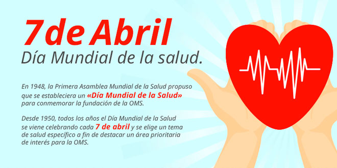
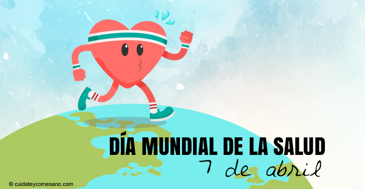
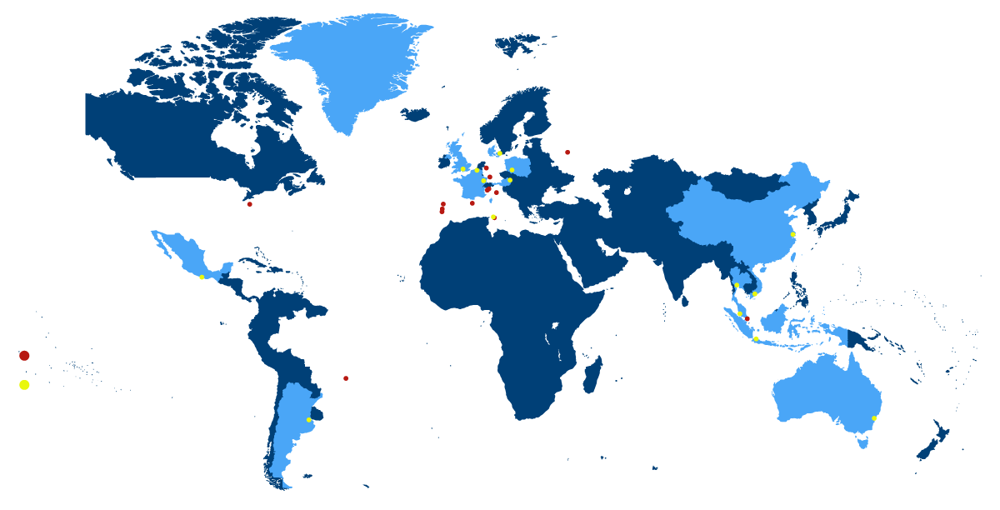
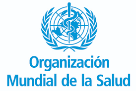
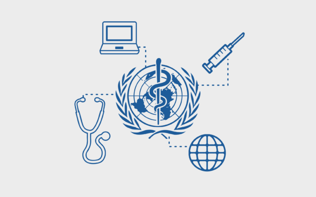
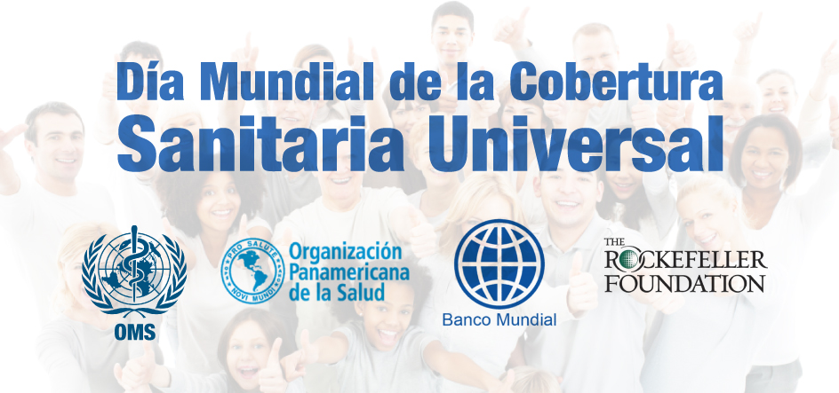

Día Mundial de la Salud 7 de abril
Infografia

En 1948 la Primera Asamblea Mundial de la Salud propuso que se estableciera un Día Mundial de la Salud para conmemorar la fundación de la Organización Mundial de la Salud. Tres años después, cada 7 de abril decretaron que se celebrara esta festividad.
El objetivo de la OMS es lograr que todos los pueblos alcancen el nivel de salud más elevado posible.
La OMS se encargada de gestionar políticas de prevención, promoción e intervención en salud a nivel mundial.
La OMS está integrada por 194 Estados Miembros y 2 Miembros Asociados. se reúnen cada año en Ginebra en el marco de la Asamblea Mundial de la Salud, respaldada a su vez por 34 miembros del Consejo Ejecutivo, con objeto de: Establecer la política general de la Organización, aprobar el presupuesto, cada 5 años, nombrar al Director General.
La cobertura sanitaria universal busca asegurar que todas las personas reciban los servicios sanitarios que necesitan, sin tener que pasar penurias financieras para pagarlos, es posible obtenerla cuando existe una firme determinación política.
El Día de la Cobertura Universal de Salud, se conmemora cada 12 de dic iembre, es el aniversario de la primera resolución unánime de las Naciones Unidas en la que se pide a los países que brinden atención médica asequible y de calidad a todas las personas y en todas partes.

 8
8